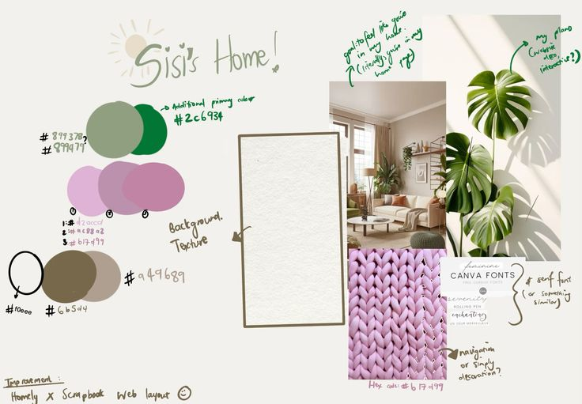
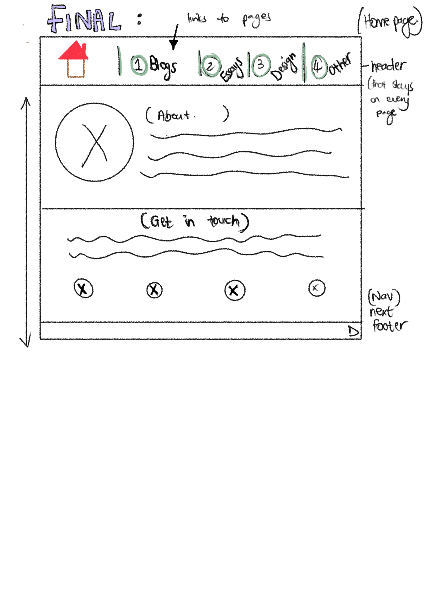
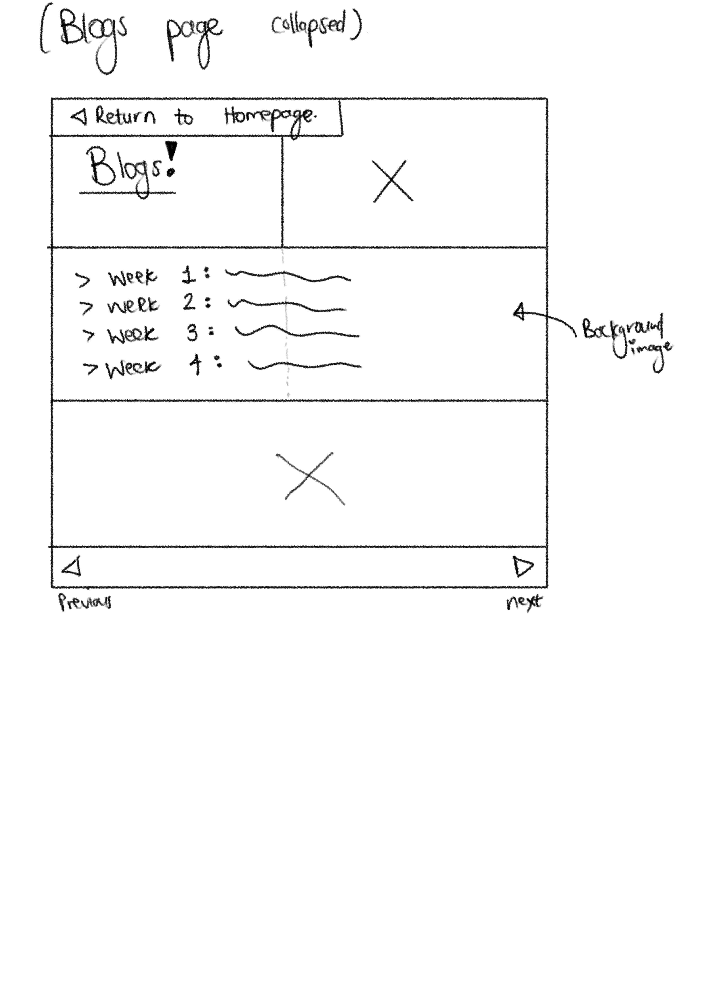
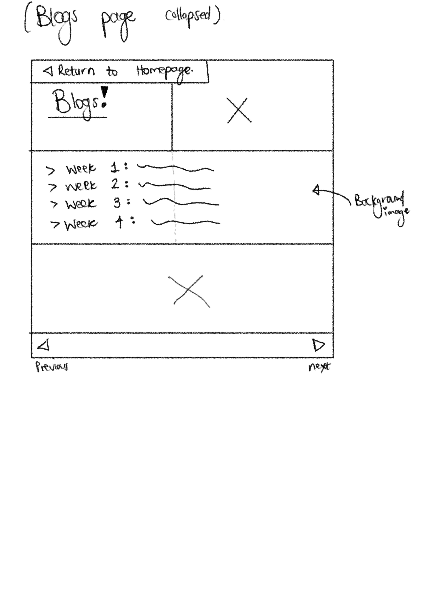
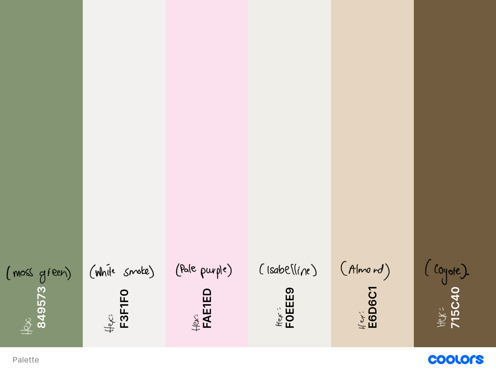

Design Reflection: LATEST UPDATE:
Yes, Ive moved things around
As you can see from the mood board above, this is the plan, or should i say...WAS the plan...
Developing this website has been one long and humbling journey. I had big hopes for how everything would come together, but I have to be honest. I didn’t manage to make everything work in time. There were ideas that got abandoned, features I couldn’t quite figure out, and plenty of technical challenges that forced me to simplify as deadlines approached. At one point, I even misplaced my Week 7 blog post in the wrong folder. That moment alone is proof that even when I try to be a perfectionist (sometimes lol), mistakes still happen.
That being said, I’ve learned so many important skills. I now understand how to use CSS grids, how to link and embed videos (even from external sources like Google Drive), how to clean up semantic HTML, and how to create better visual sections. I know the site might look totally different by the time the next submission rolls around. My website might do a whole 180..who knows (I should know, lmao)
For the fonts, I chose a mix to reflect different aspects of the site’s tone and personality, just like my own disorganised personality. I used Fira Sans Condensed, Great Vibes, SchoolBell, Oooh Baby, and Playfair Display. Some are bold and eye-catching, meant to grab attention quickly, while others offer easy legibility for reading on web pages. The handwriting-style fonts like Oooh Baby help add a personal, playful touch and give the site a more informal, non-academic feel.
The textured header was one of my bigger experiments. It adds visual interest, but honestly, I kind of regret putting it in. I haven’t figured out how to design custom doorknob-shaped navigation buttons that would give the illusion of moving from page to page like a journey through rooms. If I can’t make that idea work later, the header might need to go or be reworked.
I also worked on visual hierarchy by making sure my headings stood out using larger font sizes, bold weight, and contrasting colours. This answers the prompt, “How will you ensure the headings stand out?” and I think it help make my style guide clearer and more practical for future editing.
My use of semantic markup is improving. I’ve been using tags like main, section, article,in a more structured way. But I know that my overall information architecture still needs more thought. I need to keep asking myself how users will move through the site and what kind of experience I’m designing for them.
One big takeaway is that curation doesn’t happen overnight. I’ve realised that in order for something to truly feel curated, it takes time, attention, and consistent effort. That insight is going to change how I approach my interaction design process going forward. It’s not just about making it look good fast. It’s about making it feel intentional.
References:
Most, if not, all of the images used on my site have been sourced from Pinterest. Please find my Board link below
All in all, this phase wasn’t perfect, but it’s helped me build a foundation I can actually work from, and that’s more than enough for now.
Idea Version 1
Documentation of My IxD (Interaction Design) process:
Interaction design focuses on making user experiences intuitive and easy. My process began by identifying the emotions and reactions I want users to feel when interacting with my website. I want them to feel like they’ve entered a space that’s warm and familiar—almost like visiting a friend’s house. The experience should feel seamless and effortless, so I prioritized simplicity in navigation and interaction.
I started with research into current design trends, particularly those that align with minimalism and a welcoming aesthetic. I looked at user personas to help me map out the different types of people who would interact with the site: my peers, lecturers, and graduate recruiters, and anyone interested in early website development. By understanding their needs, I was able to tailor the site’s flow, content, and style to create an intuitive experience.
From there, I sketched wireframes using simple apps on my iPad such as Notebook and Freeform. I must admit, they do need some refining and user input to ensure that the website I end up designing is free from confusion and has clear usability.
Goal Alignment:
My primary goals for the website are:
- Usability: Ensure every user can easily navigate through the pages.
- Flow: Create a smooth transition between pages that guides the user effortlessly from one point to the next.
- Personalization: Leave users with a sense of having met me and explored my academic and professional journey.
To achieve these goals, I focus on keeping the interface clean, the language conversational, and the overall design cohesive.
Information Structure - Content Mapping:
The website’s content structure is organized around key areas of my academic journey and professional interests. Each page serves a purpose:
Home Page:A welcoming introduction to who I am with a clear structure.
This is the current homepage layout
Blog Page:Weekly updates on my academic progress and reflections.
 


My content flow is structured to guide users logically while ensuring smooth navigation.
User Flow - Screens, Behaviour, and Decisions:
The user flow ensures an intuitive experience:
- Starting at the Homepage: Users are greeted with a friendly introduction.
- Navigation: Every page includes a button to return to the homepage.
- Content Exploration: Users are encouraged to explore further with related content links.
- Decisions: Users can choose to engage with blog posts, essays, design work, or portfolio pieces.
See a cute user flow diagram here
List and Explanation of Selected Interface Elements:
Key interface elements include:
- Navigation Bar: A fixed menu on the homepage for easy access.
- Buttons: Clear, interactive buttons for seamless navigation.
- Images: Relevant images to enhance engagement.
- Links: Contrasting color links with hover effects.
- Footer: A minimal footer with social media links, contact info or copyrighted tags.
Style Process Documentation:
The website's design is a balance of fun, personality, and professionalism.
Typography - Readability and Personality:
Headings: Bubble-like font for a playful feel.
Essays: Times New Roman for a structured, academic tone.
Body Text: Sans-serif for readability.
Composition - Balance, Hierarchy, and Flow:
Strong Visual Hierarchy: Headings stand out for easy scanning.
Whitespace: Strategic spacing for readability.
Sectional Design: Clearly defined sections for intuitive navigation.
Interface Elements - Visual Representation and Usability:
Navigation Bar: Fixed and simple for ease of use.
Buttons: Rounded with soft hover effects.
Dropdown for Weekly Blogs: Keeps posts organized and accessible.
Return-to-Home Button: Top-right placement for convenience.
Colour and Visual Aesthetic:
My color palette is designed to create a warm, inviting digital space.
- Moss Green: A grounding, calm base color.
- White Smoke: A neutral backdrop for readability.
- Almond: Warmth and coziness for a welcoming feel.
- Pale Purple: A subtle touch of creativity.
- Isabelline: A balanced, neutral shade.
- Coyote: A soft contrast for depth.
- Sage Green (Potential Addition): Enhances the natural aesthetic.
Primary colour palette:
Secondary colour palette: